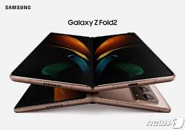
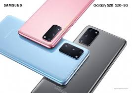
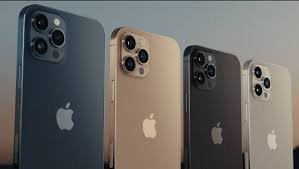
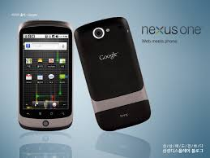
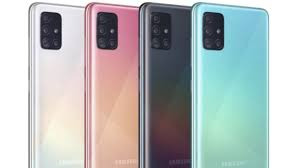

역사
최초의 스마트폰은 사이먼(Symon)으로 추정된다.
스마트폰은 컴퓨터를 결합한 무선 휴대전화기이다. PC에서 실행되는 운영체제보다 작게 만든 모바일 운영체제를 탑재하여 인터넷 검색, 전자우편, 간단한 문서 편집, 카메라, 오디오 및 비디오 재생 등 PC의 기능을 거의 모두 갖추고 있다.
최초의 스마트폰은 사이먼(Symon)으로 추정된다.
안드로이드는 휴대전화를 비롯한 휴대용 장치를 위한 운영 체제와 미들웨어, 사용자 인터페이스 그리고 표준 응용 프로그램(웹 브라우저, 이메일 클라이언트, 단문 메시지 서비스(SMS), MMS 등을 포함하고 있는 소프트웨어 스택이자 모바일 운영 체제이다
아이폰은 2007년 1월 9일, 애플이 발표한 휴대전화 시리즈이다.
|  |  |  |  |  |